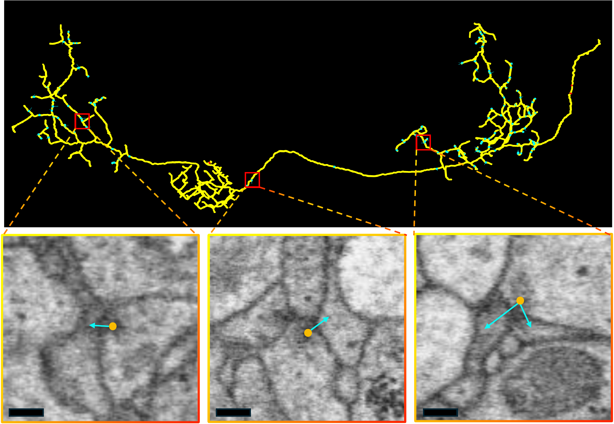
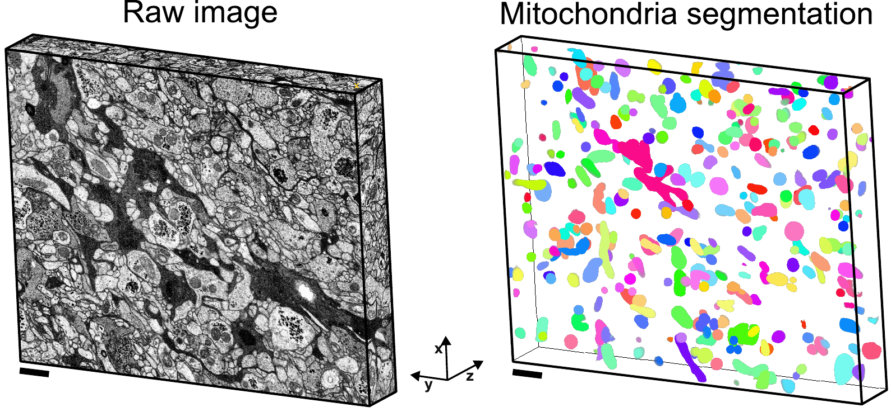

Abstract
We release an enhanced FIB-SEM volume and associated neuron, mitochondria, synapse and glia automated segmentations of the complete central nervous system of a first-instar female Drosophila melanogaster larva. The volume is free of gaps and imaging artefacts. Segmentation data is largely unproofread, except for select neurons in the premotor and proprioceptive systems and for subvolumes with manually annotated synapses, which serve as training and evaluation data. The dataset represents the first complete central nervous system of the larval fly; completing its connectome will require improved machine-vision methods or extensive human proofreading. All the data and methods are publicly available for further improvement and analysis.
The dataset at a glance
What is released
- EM volume. 20,486 × 21,471 × 34,745 voxels with no section loss, no curtaining and no known membrane nicks that would cause false merges.
- Neuron segmentations. Three automated instance segmentations (FFN, LSD and BiaPy). FFN covers both neuropil and cell bodies across the whole CNS and scores best on long-range continuity.
- Synapses. Whole-CNS synaptic partner predictions from Synful, re-implemented in Catena, plus manually annotated evaluation cubes.
- Mitochondria and glia. A whole-CNS mitochondria instance segmentation and a semantic glia segmentation.
- Proofread neurons. Selected premotor and proprioceptive neurons, including 24 fully proofread VNC neurons used for evaluation.
Highlights


Data access
The EM volume and automated segmentations can be browsed without an account. Proofreading environments need an account.
| Resource | Contents | Access |
|---|---|---|
| Neuroglancer | EM volume and neuron segmentations | Open |
| Neuroglancer | Mitochondria and glia segmentations | Open |
| Zenodo | Evaluation crops, synapse cubes and proofread neurons | Download |
| CAVE | Predicted synaptic connections; collaborative proofreading of the segmentation | On request |
| CATMAID | Skeleton tracing and annotation | On request |
| Code | Catena (synapse and neuron pipelines) | GitHub |
| Code | BiaPy (segmentation) | GitHub |
Request access to CAVE or CATMAID
We give access to researchers who want to proofread, trace or analyse Octo. To request it:
- Fill in the short form below, including the Google account you will use to sign in. CAVE uses Google sign-in.
- We review requests and reply by email, usually within a few working days.
- Once approved, you get login details and a short guide to the proofreading workflow.
Citation
@article{mohinta2026octo,
title = {The female larval fly {CNS} connectome: first draft},
author = {Mohinta, Samia and Franco-Barranco, Daniel and Lee, Shi Yan and
G{\'o}mez-G{\'a}lvez, Pedro and Agrawal, Shaurya and Clayton, Michael and
Barnes, Christopher L. and Randel, Nadine and Correia, Ana and
Ceffa, Nicol{\`o} and Stoichkova Velichkova, Nadia and Nielsen, Katrin and
Hess, Harald and Pang, Song and Xu, C. Shan and Berni, Jimena and
Januszewski, Micha{\l} and Zlatic, Marta and Cardona, Albert},
journal = {bioRxiv},
year = {2026},
doi = {10.64898/2026.09.28.754924},
url = {https://www.biorxiv.org/content/10.64898/2026.09.28.754924v1}
}
Acknowledgements
This work was supported by HHMI Janelia Research Campus, the Wellcome Trust (205038/Z/16/Z), the European Research Council (ERC-2018-COG 819650), BBSRC (APP26929, “Population connectomics”) and the MRC Laboratory of Molecular Biology.